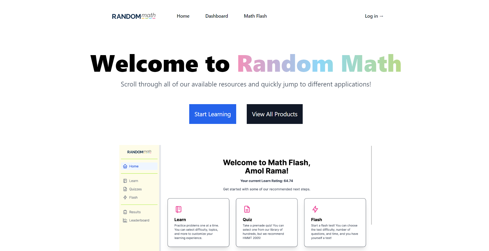
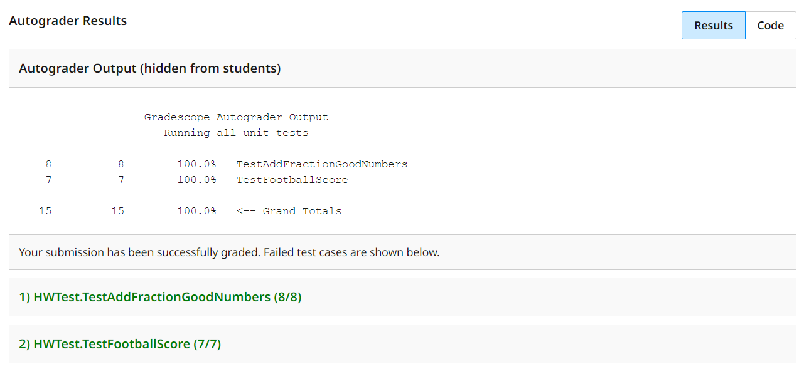
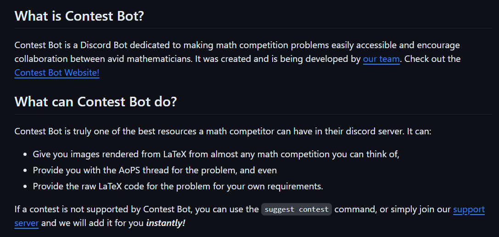
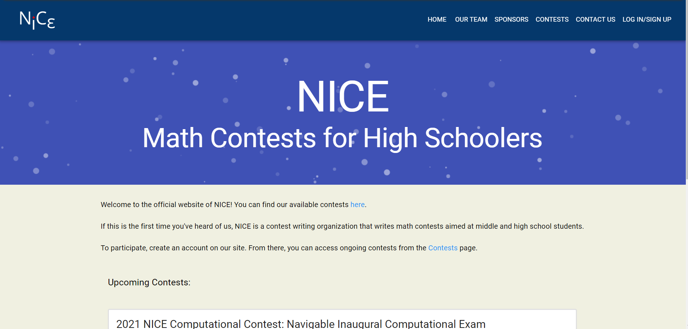

Portfolio
Below are some projects I worked on. Attached below with them are links to any live websites, or any public code repositories.
-
My Random Math
At Random Math, I helped develop an authentication to use in their in-house testing application, Math Flash. This essentially serves as the IDP and an OAuth server for other applications hosted by Random Math.
-
CSSE 220 Autograder
As a teaching assistant for CSSE 220, I helped develop the autograder. This helps other graders save time by taking several menial steps out of grading, including not having to compile a separate project for each student.
-
Discord Contest Bot
One of my passion projects was to create a bot capable of displaying problems from various math competitions. This was done by essentially creating a database with all the problems and then parsing user input to give them a matching problem. This project is now archived.
-
NICE Math
One of the projects I worked on with my friends was creating a high-quality computational and Mock Olympiad contest, that would replace the Online Math Olympiad series. We ran a total of 5 successful contests on the platform, which I helped develop both the problems and the testing platform.